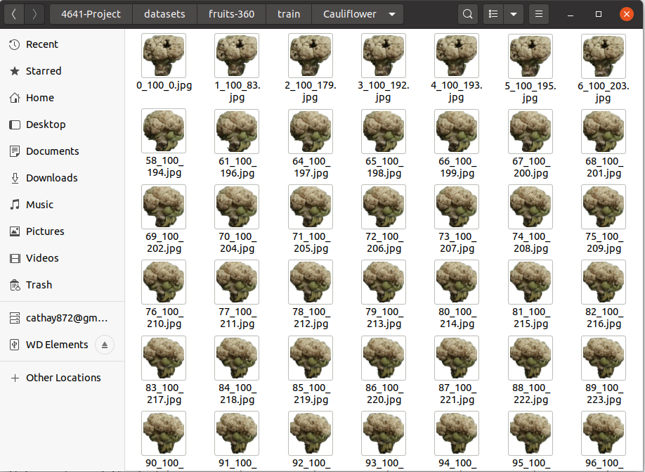
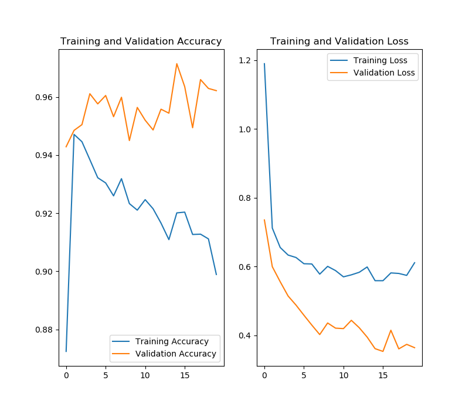

-
A Global Average Pooling to shrink network size
-
A Dense Layer with 512 outputs nodes with activation function ReLU
-
A Dropout layer with rate 0.5 to prevent overfitting
-
A final dense layer with 28 output nodes (classes for predictions)
-
A convolution layer with kernel size of 3x3 and filter size of 512
-
An output linear classifier with 4*k outputs
-
An output sigmoid regressor with 1*k outputs (k being the number of anchor boxes)
*First time loading may take up to 2 minutes
1 Introduction
1.1 Motivation
During this special time of pandemic, cooking at home has become increasingly popular among the younger generation, but it also raised a question, which is how to cook healthily. Unlike other packed products, the raw materials we can buy like meat and vegetables don’t come with nutrition facts. There are some applications or websites that help track what you eat. However, most of them require manually typing in the names of materials which is tedious and time-consuming. Kitchen Alchemy is here to help. You only need to upload a picture of what you eat to our website, we will do everything for the rest. In the end, we will also provide you a graph which helps visualize the nutrient facts.
1.2 Project overview
Our project, Kitchen Alchemy, uses neural networks for image recognition.Different from the traditional tracking process, our product provides all necessary nutrition facts conveniently and efficiently. With our program, people may know more about the nutrient facts of their food and develop healthier eating habits.
2 Dataset Collecting and processing
2.1 Dataset Description
2.1.1 Dataset Source
We started with multiple datasets from Kaggle, ImageNet, and Google data. After comparing different datasets, we chose Fruit 360 from Kaggle as our main raw dataset. [1] Fruits and vegetables were planted in the shaft of a low speed motor (3 rpm) and a short movie of 20 seconds was recorded. Due to the variation of the light condition and background, they decided to extract the object from the background. The Fruit 360 dataset was built on 02/25/2017 but has been actively updated. We used the current newest version which is Version: 2020.05.18.0.

The nutrient facts dataset was obtained from NSDA and some other datasets found online. For some of the fruits that were not in the dataset, the values were manually searched and inputted.
2.1.2 Dataset characteristics (the original dataset)
| Total number of images | Training set size | Test set size | image size | Total number of classes |
| 90483 | 67692 | 22688 | 100x100 pixels | 131 |
2.2 Data preprocessing
Since there are some fruits in the dataset that are not commonly seen in daily life, we decided to merge those varieties into one class such as group Kumquats with Orange so that the training process would be easier. After cleaning, we have 28 classes in total for both training and testing. Due to combing different classes together, depending on the class the number of images in one class vary from 103 to 11*103.
After cleaning our dataset, we need to connect the nutrient facts table to the classes. In the nutrient chart, we have 12 categories associated with each class.
3 Method
3.1 Algorithms and Models
3.1.1 Convolutional Neural Network – A Transfer Learning Approach
When using a CNN model to complete a typical image classification task, there are usually two approaches. One can build a CNN network from scratch, or use transfer learning from a pre-trained model. We chose the latter approach for a few reasons. First, the transfer learning approach can take advantage of the pre-trained model in terms of structure, weights, and hyperparameters. Second, training a transferred model is more time-efficient than a new model. Transferred models often have less weights, which helps bring down the hardware requirement for training a network.
In our project, Python libraries Tensorflow as Keras are used in our protypying. With the help of these libraries, manipulations of the network are much easier. We finally chose the ImageNet Contest winning model MobileNetV2 as our starting point. MobileNetV2 has considerably less model size and weights compared to other popular CNN like VGG16/19 and InceptionV3. To fit with our task, the last layer of the original MobileNetV2 (dense layer with 1000 outputs nodes) is removed and replaced with our custom layers:
To further prevent overfitting, we also added two L2 Regularizations to the two dense layers.
Meanwhile, augmentations were applied to the training dataset. With the ImageDataGenerator class from Keras, the actual images fed into the network may include random shifts in zoom range, width-to-height ratio, etc. This helps the model better generalize to real-world images.
With this network structure, training takes about 50 minutes for a total of 20 epochs on a GTX 1060 6GB Max-Q. At the end, the model is able to reach an accuracy of 96% and a cross-entropy loss of 0.38 on the validation dataset. Afterwards, we tested our trained model using images outside of the validation dataset. It performed within our expectations.

3.1.2 Faster-RCNN and Regional Proposal Network
To offer better user experiences by allowing users to directly take pictures of their fridge or arranged cooking materials to obtain the nutritious value, we decided to also implement a segmentation layer that will serve as an input to the recognition network for nutrientritious values. Since the user-data is photo-based, there are no real-time requirements for image segmentation. Hence an improved branch of the RCNN network - Faster-RCNN was implemented. Faster-RCNN utilizes Anchor Boxes and Regional Proposal Network, which consists of:
in parallel to CNN feature extraction to come up with possible ROIs that contain images of food. For the feature extraction network that serves as both the input to the RPN and the ROI pooling layer we used InceptionResnetV2 that should provide us with decent accuracy while not incurring heavy computation cost. However, due time constraint we were unable to integrate the Faster-RCNN and RPN into our project’s final submission.
4 Results and Discussion
4.1 Results presentation
On the sidebar, a “Choose File” button appears under “View Your Report”, That’s where the picture of the fruit is uploaded.
After a few seconds, the predicted result would appear on the right with the data visualization on the bottom.
4.2 Limitation and Future work
Like most CNN models, our model has limitations with regard to prediction accuracy for certain types of fruit that are similar in shape and color. Infrequently, the model predicts a red apple as a tomato, or an orange as a potato. This is mainly due to the limitation of the dataset used in training. As mentioned in the dataset section, images in this dataset are taken from different perspectives of the same fruit. As a result, the color, texture, shape etc. learned from the dataset are limited to that particular fruit/vegetable and sometimes do not generalize well to various characteristics of a real-world object.
4.3 Conclusion
Overall, since the main limitation we are facing right now is the number and variety of our datasets. The next step that we are looking to is gathering more pictures for our classes. This may help improve the accuracy of current classes. Beyond that, we will also try some other models with more parameters and see whether or not it will help with performance. Moreover, we are also considering adding or finishing some other features that we mentioned in the proposal such as recommendations.
5 References
[1] Horea Muresan, Mihai Oltean, Fruit recognition from images using deep learning, Acta Univ. Sapientiae, Informatica Vol. 10, Issue 1, pp. 26-42, 2018.
[2] Song, Y., Elkahky, A. M., & He, X. (2016). Multi-Rate Deep Learning for Temporal Recommendation. Proceedings of the 39th International ACM SIGIR Conference on Research and Development in Information Retrieval - SIGIR 16. doi: 10.1145/2911451.2914726
[3] Krizhevsky, A., Sutskever, I., & Hinton, G. E. (2017). ImageNet classification with deep convolutional neural networks. Communications of the ACM, 60(6), 84-90. doi:10.1145/3065386
[4] Xie, S., Kirillov, A., Girshick, R., & He, K. (2019). Exploring Randomly Wired Neural Networks for Image Recognition. 2019 IEEE/CVF International Conference on Computer Vision (ICCV). doi: 10.1109/iccv.2019.00137
6 Contribution
Jiajun Mao: Segmentation
Yue Pan: Model training and tuning
Wei Xin: Website development, User Interface
Lisha Yang: Nutrient Fact chart, User Interface
Tongshu Yang: Data Cleaning